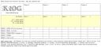

Since we’re not out hiking as often as in days of old, we usually end up keeping track of used spells and hit points on a scrap piece of paper. The KtOG game sheet has been used for only a few games, but should include everything you need to keep track of for games between 2 to 4 players. The sheet was created on Google Docs, which is an almost complete replacement for Microsoft Word (at least for everything Nate needs it to do). A screenshot of the sheet has been uploaded which is available by clicking on the thumbnail at right for printing.
The very latest version should be available here:
http://docs.google.com/Doc?id=dhttdpkx_59f5vvhq
(opens in a new window)